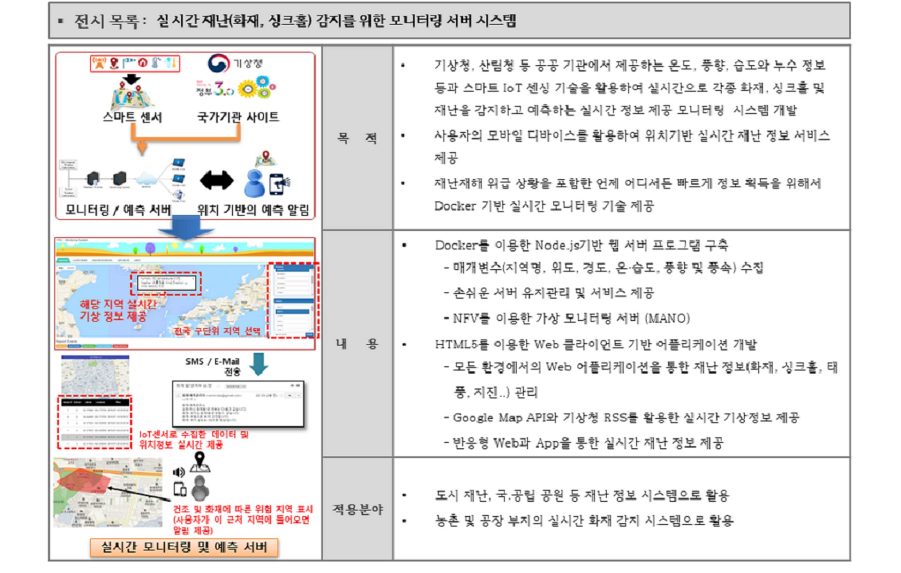

We can use a system of realtime information monitoring system using smart IoT sensing technology for detecting and preventing the disaster
기상청, 산림청 등 공공기관에서 제공하는 온도, 풍향, 습도와 누수 정보등과 스마트IoT 센싱 기술을 활용하여 실시간으로 각종 재난을 감지하고 예측하는 실시간 모니터링 시스템 개발
재난에 따른 위험지역에 진입하게 되면, 알람 서비스를 제공해준다.
도시 재난, 국·공립 공원 등 재난 정보 시스템 및 농촌 및 공장 부지의 실시간 화재 감지 시스템으로 활용
choi geun chang
choi geun chang
choi geun chang
t_o_p1412@naver.com
+082 62 530-0407
광주광역시 북구 용봉로 77, 전남대학교 공과대학 6호관 702호 스마트모바일미디어컴퓨팅 연구실
SMMC LAB, 77 Yongbong-ro, Buk-gu, Gwangju, Republic of Korea